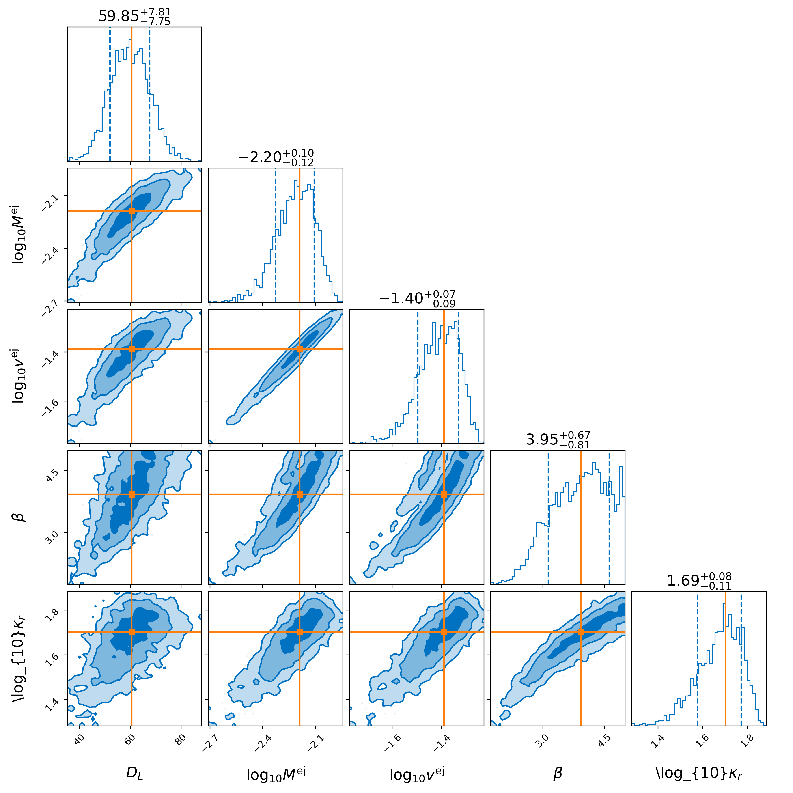
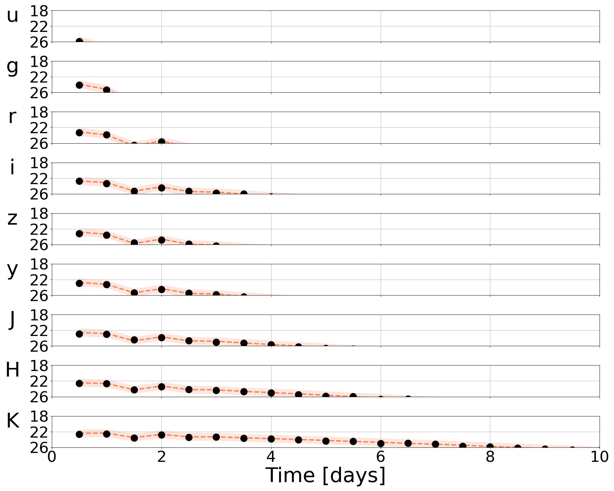

The Nuclear Multimessenger Astronomy (NMMA) framework
nmma is a fully featured, Bayesian multi-messenger pipeline targeting joint analyses of gravitational-wave and electromagnetic data (focusing on the optical). Using bilby as the back-end, the software is capable of sampling these data sets using a variety of samplers. It uses chiral effective field theory based neutron star equation of states when performing inference, and is also capable of estimating the Hubble Constant.
Quick Start
nmma provides a number of example models to compare to: kilonovae, gamma-ray burst afterglows, shock cooling supernovae, core-collapse supernovae, etc.
We can demonstrate the functionality of the pipeline using a quick example. Taking the Metzger (2017) blue kilonova model as an example, we can generate a set of injections simply using the prior file (all are found in priors/).
nmma_create_injection --prior-file priors/Me2017.prior --eos-file example_files/eos/ALF2.dat --binary-type BNS --n-injection 100 --original-parameters --extension json
This generates a file called injection.json that includes an injection file drawn from the prior file with a number of injections specified by –n-injection.
It is this file that is used for the Bayesian inference analysis. An example analysis is as follows:
light_curve_analysis --model Me2017 --svd-path ./svdmodels --outdir outdir --label injection --prior priors/Me2017.prior --tmin 0.1 --tmax 20 --dt 0.5 --error-budget 1 --nlive 512 --Ebv-max 0 --injection ./injection.json --injection-num 0 --injection-outfile outdir/lc.csv --generation-seed 42 --filters u,g,r,i,z,y,J,H,K --plot --remove-nondetections
Here, the time array is specified by a minimum, maximum, and delta t (in days) as specified by –tmin, –tmax, and –dt. The particular injection chosen is drawn from an index specified by –injection-num. The –filters available are specified with –filters u,g,r,i,z,y,J,H,K. Summary plots are available in outdir/.
 Contributing
nmma is released under the MIT license. We encourage you to modify it, reuse it, and contribute changes back for the benefit of others. We follow standard open source development practices: changes are submitted as pull requests and, once they pass the test suite, reviewed by the team before inclusion. Please also see our contributing guide.